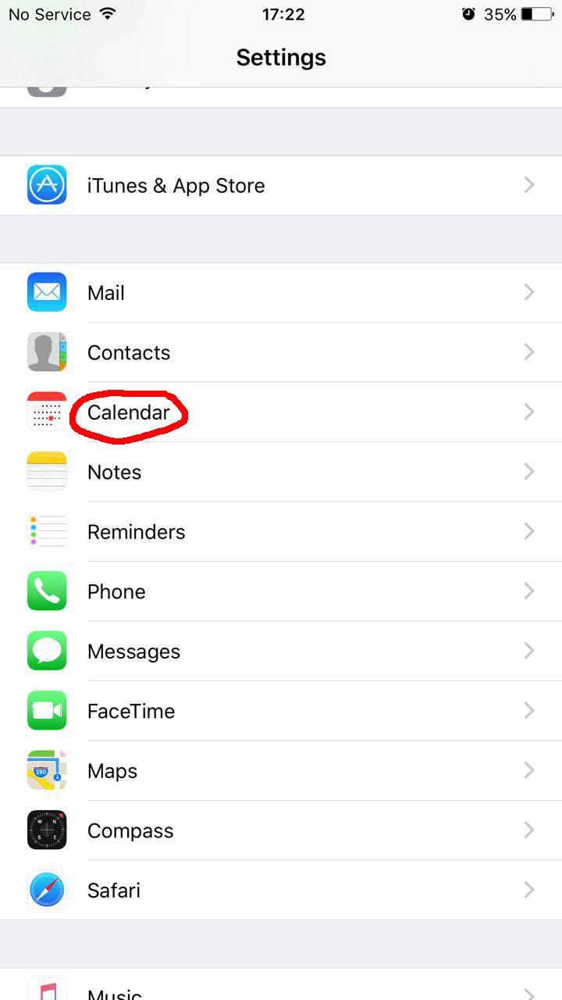
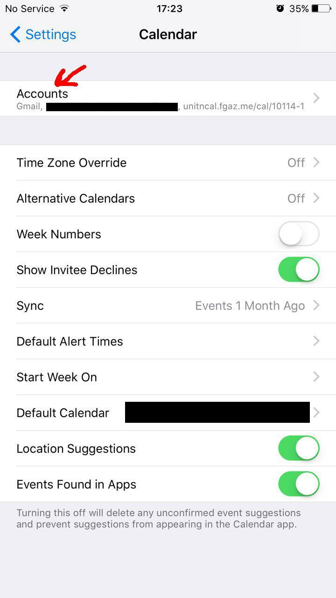
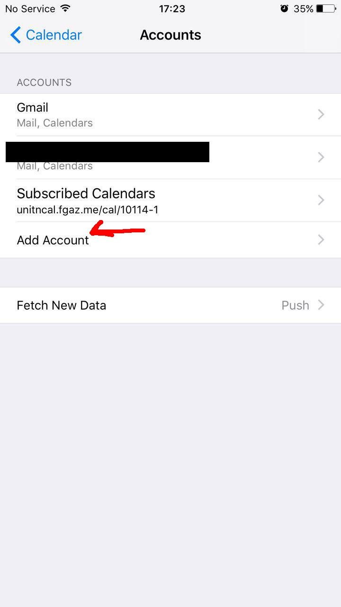
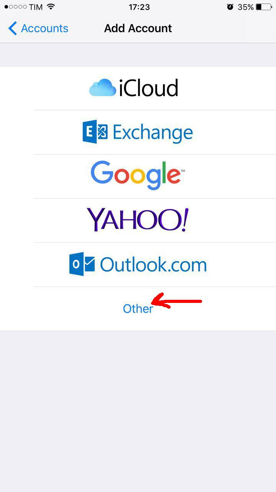
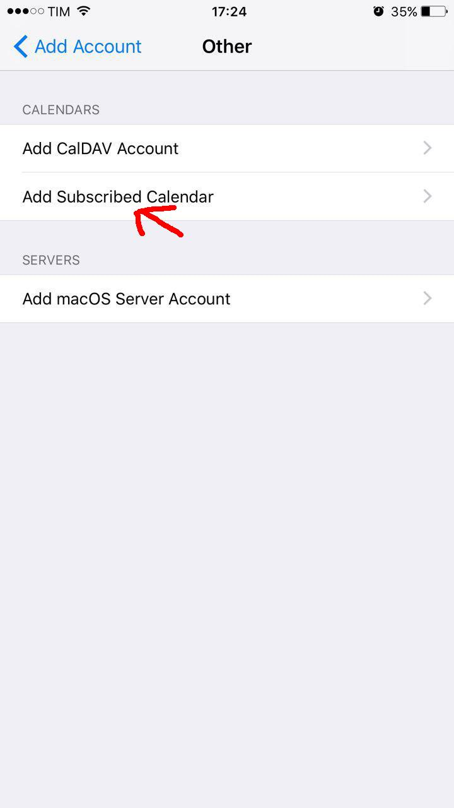
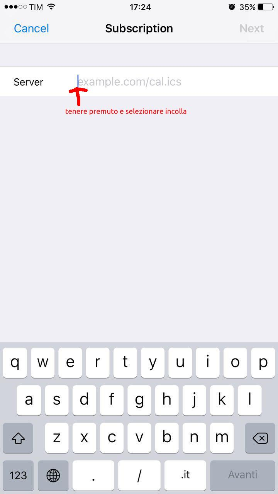
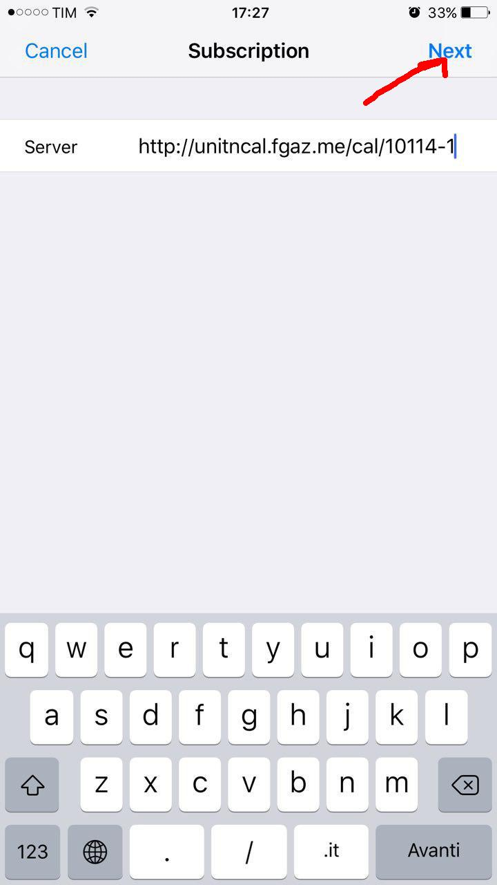
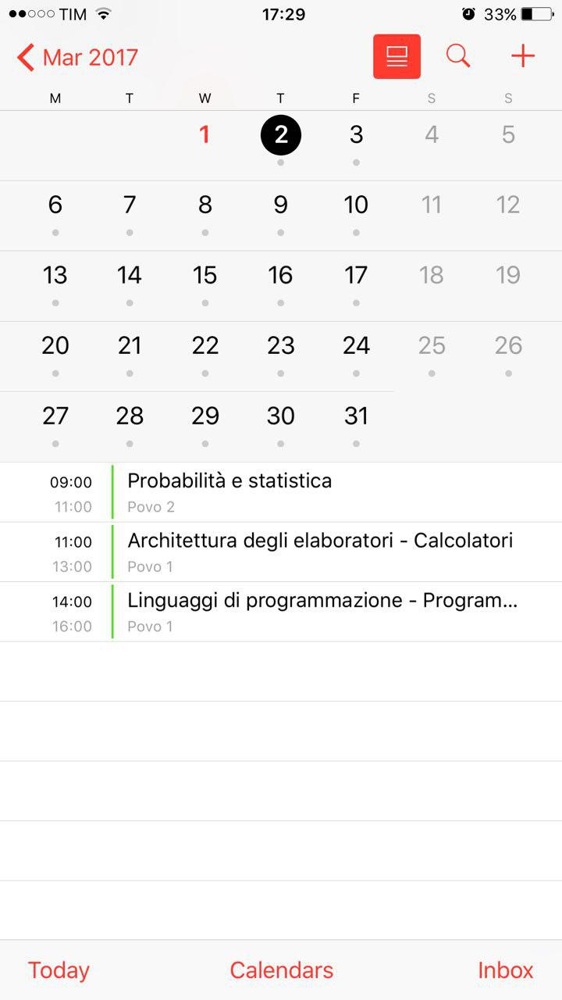

← Torna alla home
Istruzioni per iOS
Fortunatamente iOS supporta nativamente i file iCal, quindi la procedura è molto semplice:
- Copiare il link del calendario come descritto nella pagina principale;
- Apri Impostazioni => Calendario => Aggiungi account => Altro => Aggiungi calendario;
- Incolla l'indirizzo copiato precedentemente e conferma;
- Apri il calendario: il gioco è fatto!
Screenshots:
- 
- 
- 
- 
- 
- 
- 
- 